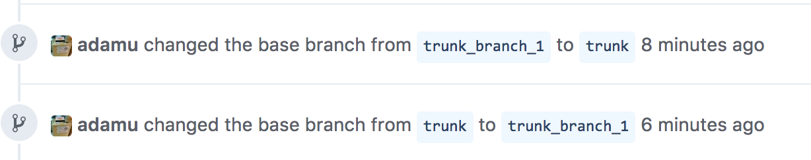

GitHub pull request showing commits that are already in target branch
I'm trying to review a pull request on GitHub to a branch that isn't master. The target branch was behind master and the pull request showed commits from master, so I merged master and pushed it to GitHub, but the commits and diff for them still appear in the pull request after refreshing. I've doubled checked that the branch on GitHub has the commits from master. Why are they still appearing in the pull request?
I've also checked out the pull request locally and it only shows the un-merged commits.
Answer
It looks like the Pull Request doesn't keep track of changes to the target branch (I contacted GitHub support, and received a response on 18 Nov 2014 stating this is by design).
However, you can get it to show you the updated changes by doing the following:
http://githuburl/org/repo/compare/targetbranch...currentbranch
Replace githuburl, org, repo, targetbranch, and currentbranch as
needed.
Or as hexsprite pointed out in his answer, you can also force it to update by
clicking Edit on the PR and temporarily changing the base to a different
branch and back again. This produces the warning:
Are you sure you want to change the base?
Some commits from the old base branch may be removed from the timeline, and old review comments may become outdated.
And will leave two log entries in the PR:

Suggest
It looks like the Pull Request doesn't keep track of changes to the target branch (I contacted GitHub support, and received a response on 18 Nov 2014 stating this is by design).
However, you can get it to show you the updated changes by doing the following:
http://githuburl/org/repo/compare/targetbranch...currentbranch
Replace githuburl, org, repo, targetbranch, and currentbranch as
needed.
Or as hexsprite pointed out in his answer, you can also force it to update by
clicking Edit on the PR and temporarily changing the base to a different
branch and back again. This produces the warning:
Are you sure you want to change the base?
Some commits from the old base branch may be removed from the timeline, and old review comments may become outdated.
And will leave two log entries in the PR: